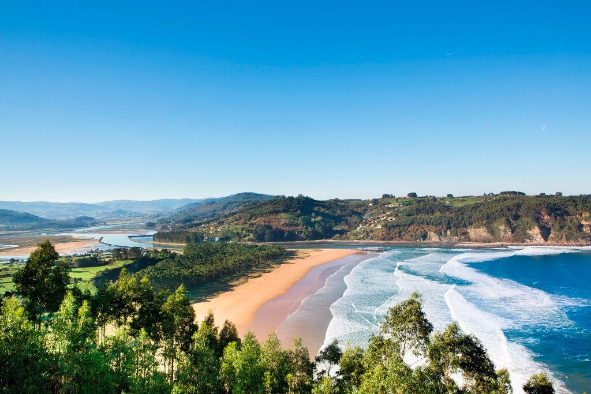

Playa tranquila y poco concurrida tal como su nombre indica, que destaca por su belleza salvaje, sin bares, socorristas y duchas.
Playa de Cue
Playa situada en Llanes
Esta playa cuenta con un merendero y un amplio aparcamiento. Se caracteriza por tener tres islotes, los cuales quedan al descubierto con marea baja, por lo que se puede acceder a ellos a pie.
Playa de Aguilar
Playa situada en Muros del Nalón
Esta playa es la más concurrida de Muros del Nalón. Cuenta con una gran riqueza visual y grandes atalayas desde las que divisar la playa.
Playa de Rodiles
Playa situada en Villaviciosa
Esta playa cuenta con una zona arbolada con numerosas mesas y bancos. Además es muy famosa por su oleaje y por la práctica de surf.

Playa de Torimbia
Playa situada en Llanes
Playa con forma de concha, arena muy blanca y agua muy limpia. Es de carácter nudista, aunque también permite la entrada a público no nudista.